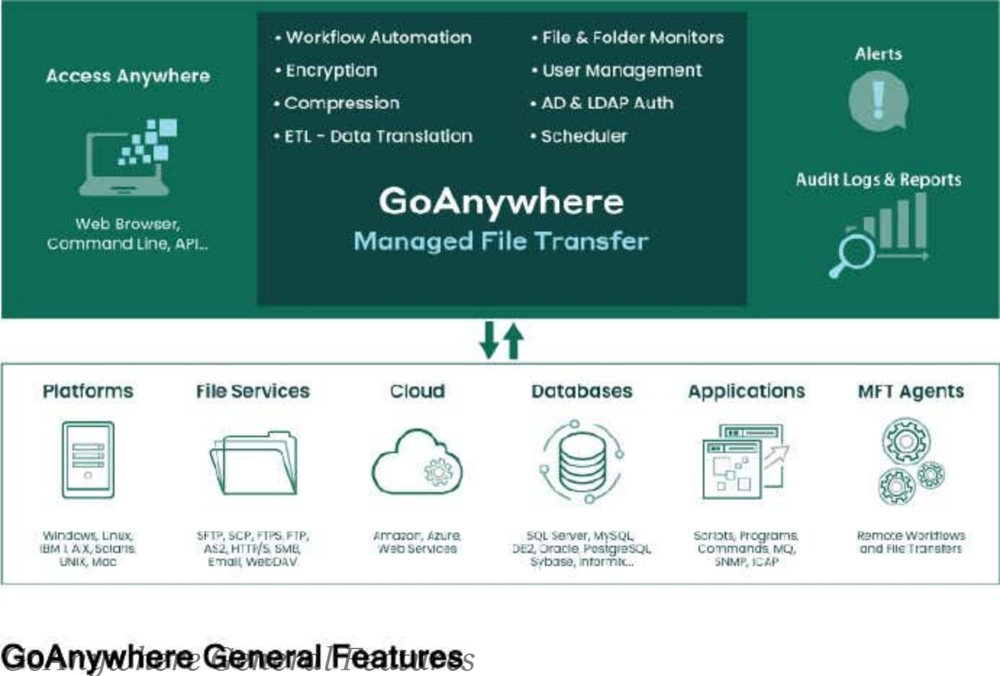

Getting Started
GoAnywhere MFT is a Managed File Transfer solution which provides centralized control and auditing of file transfers and workflows for the enterprise. With its comprehensive features and intuitive interface, GoAnywhere MFT will reduce operational costs, improve the quality of data transmissions and meet stringent compliance requirements.
Please note that GoAnywhere MFT will be referred to as simply "GoAnywhere" throughout this guide.
GoAnywhereGeneralFeatures
•
Runs on most platforms including Windows, Linux, VMware, Unix, IBM i, Solaris and Mac OS.
•
Includes a browser-based administrator interface with a customizable dashboard, advanced graphical components and drag-n-drop support.
